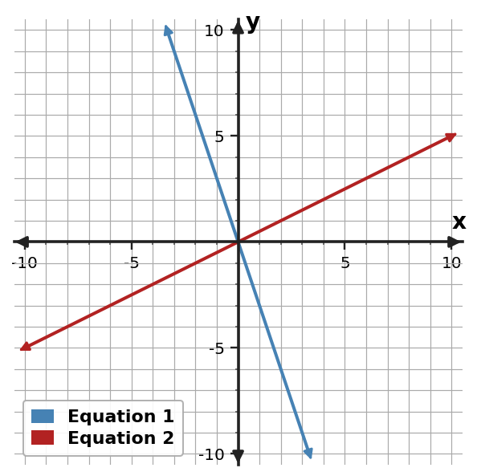

Algebra Practice 3.1 :::: Set 2
1. Solve by elimination the system.
$\begin{cases}x + 2y = 9\\2x - y = -2\end{cases}$
2. Solve by elimination the system.
$\begin{cases}3x - y = -8\\x + y = 0\end{cases}$
3. Classify the system and justify. $\begin{cases}x+y=-2\\3x+3y=-6\end{cases}$
4. Classify the system as one solution, no solution, or infinitely many solutions. $\begin{cases}y=-2x-4\\y=3x+2\end{cases}$
5. Use the graph to determine the solution of the system.

6. Use the graph to determine the solution of the system.

7. Use the table to identify the ordered pair that satisfies both equations.
| x | Equation 1 y | Equation 2 y |
|---|---|---|
| -2 | -7 | -13 |
| -1 | -6 | -9 |
| 0 | -5 | -5 |
| 1 | -4 | -1 |
| 2 | -3 | 3 |
8. Solve by elimination: $\begin{cases}2x+y=5\\3x-2y=18\end{cases}$
9. Solve by elimination. $\begin{cases}x+y=6\\-x-2y=-9\end{cases}$
10. Classify the system and justify. $\begin{cases}x+y=-4\\3x+3y=-12\end{cases}$
11. Classify the system as one solution, no solution, or infinitely many solutions. $\begin{cases}y=-3x+3\\y=-3x+5\end{cases}$
12. Use the table to identify the ordered pair that satisfies both equations.
| x | Equation 1 y | Equation 2 y |
|---|---|---|
| 1 | 2 | -4 |
| 2 | 0 | -3 |
| 3 | -2 | -2 |
| 4 | -4 | -1 |
| 5 | -6 | 0 |
13. Use the graph to determine the solution of the system.

14. Use the table to identify the ordered pair that satisfies both equations.
| x | Equation 1 y | Equation 2 y |
|---|---|---|
| -4 | -6 | -8 |
| -3 | -3 | -4 |
| -2 | 0 | 0 |
| -1 | 3 | 4 |
| 0 | 6 | 8 |
15. Solve by elimination: $\begin{cases}x-2y=1\\3x+y=10\end{cases}$
16. Solve by elimination. $\begin{cases}x-y=-3\\-x-2y=3\end{cases}$
17. Classify the system as one solution, no solution, or infinitely many solutions. $\begin{cases}y=2x\\y=2x+1\end{cases}$
18. Classify the system as one solution, no solution, or infinitely many solutions. $\begin{cases}y=x\\y=x+2\end{cases}$
19. A student wants to multiply $2x+3y=4$ by $2$ for elimination but writes $4x+3y=4$. Identify the mistake and write the correct equivalent equation.
20. Use the graph to determine the solution of the system.

21. Use the table to identify the ordered pair that satisfies both equations.
| x | Equation 1 y | Equation 2 y |
|---|---|---|
| 1 | -4 | 2 |
| 2 | -2 | 1 |
| 3 | 0 | 0 |
| 4 | 2 | -1 |
| 5 | 4 | -2 |
22. Solve by elimination: $\begin{cases}3x+2y=14\\2x-y=0\end{cases}$
23. Solve by elimination. $\begin{cases}x-y=-8\\-x+2y=12\end{cases}$
24. Classify the system and justify. $\begin{cases}x+y=1\\3x+3y=3\end{cases}$